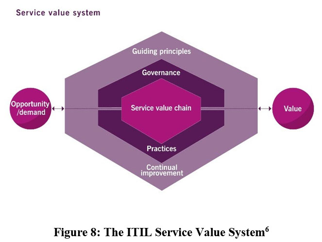

CHAPTER 6: THE SERVICE VALUE SYSTEM
The ITIL Service Value System (SVS) is “a model representing how all the components and activities of an organization work together to facilitate value creation”.
It includes:
•Guiding principles
•Governance
•Service value chain
•Practices
•Continual improvement
•Inputs and outcomes
“The ITIL SVS describes how all the components and activities of an organization work together as a system to enable value creation. Each organization’s SVS has interfaces with other organizations, forming an ecosystem that can, in turn, facilitate value for those organizations, their customers, and their stakeholders.”
Figure 8: The ITIL Service Value System6
Table 8 further explains the elements of the SVS:
Table 8: Elements of the SVS
| Opportunity/ demand | Opportunities represent options or possibilities to add value for stakeholders or otherwise improve the organisation. Demand is the need or desire for products and services thatoriginates from internal and external consumers. Opportunity and demand are inputs to the SVS. |
| Value | The outcome of the SVS is value. The SVS can enable the creation of different types of value for different stakeholders. |
| Guiding principles | The guiding principles are recommendations that can guide an organisation in all circumstances, regardless of changes in goals, strategies, types of work or management structure.The guiding principles are a component of the SVS. |
| Governance | Governance is the means by which an organisation is directed and controlled. Governance activities include evaluate, direct and monitor.Governance is an element of the SVS. |
| Service value chain | The service value chain is a set of interconnected activities that an organisation performs to deliver a valuable product or service to its consumers and to facilitate value realisation.The service value chain is an element of the SVS. |
| Practices | The ITIL practices are sets of organisational resources designed for performing work or accomplishing an objective. Practices are an element of the SVS. |
| Continual improvement | Continual improvement is a recurring organisational activity performed at all levels to ensure that an organisation’s performance is always aligned to changing stakeholderexpectations.Continual improvement is an element of the SVS. |
6ITIL® Foundation, ITIL 4 edition, Figure 4.1.
The SVS is designed to combat silos within an organisation. Silos exist when teams or departments focus solely on their own areas of work or influence, ignoring the ‘big picture’ and not looking across the organisation holistically. Silos make it more difficult for an organisation to become agile and resilient, because they limit effective communication and reduce the power of a shared vision. A siloed organisation will experience these symptoms:
•Inability to act quickly or take advantage of opportunities.
•Reduced ability to optimise resource use across the organisation.
•Poor decision making.
•Poor visibility/a lack of transparency.
•Hidden agendas and an increase in unhealthy organisational politics.
•A lack of clarity about value streams, interfaces and handoff points.
Looking at the organisation from the value system perspective helps to discourage silos. The value chain activities and practices are not a fixed or rigid structure; instead, they are configured into value streams to meet the needs of the organisation and can be reconfigured as those needs change. The value system provides a structure that enables flexibility.
In the next chapters we will study the elements of the SVS:
•Opportunity, demand, value
•Guiding principles
•Governance
•Service value chain
•Practices (including continual improvement)
Value is created by the SVS; this will not be studied in more detail and has already been covered as a concept in earlier chapters.